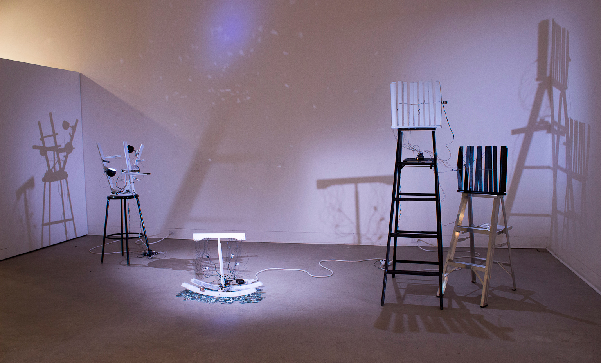
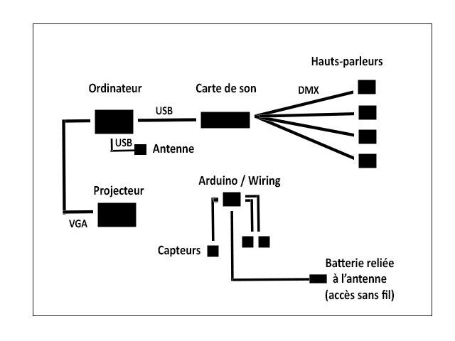
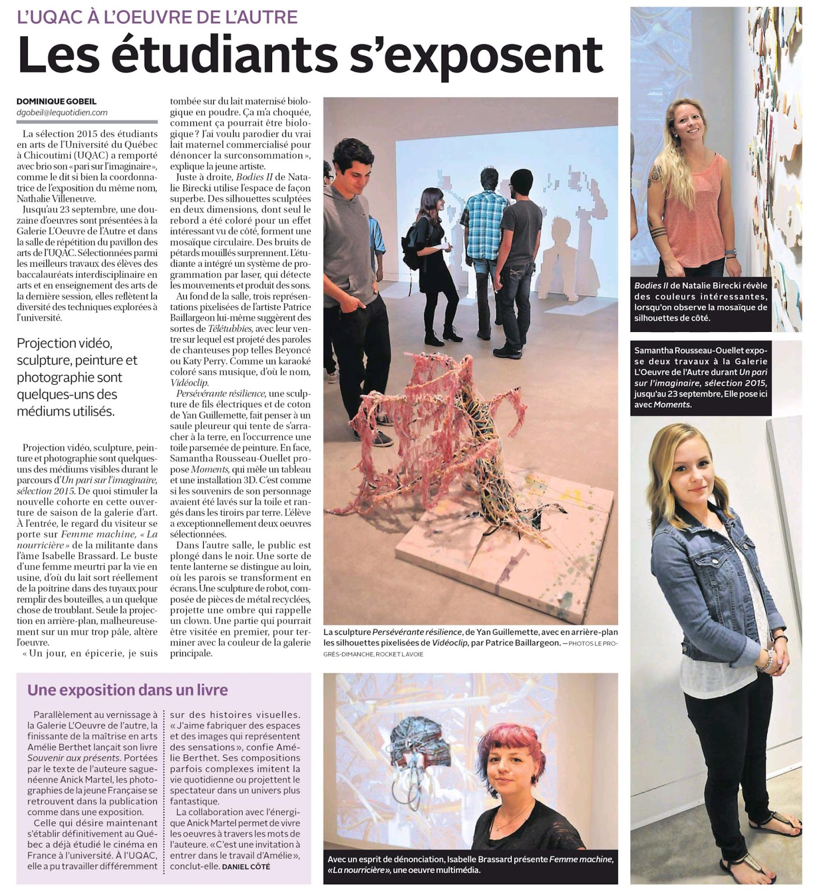

Ma recherche consiste à interroger les notions d'accident, d'autopoïèse et d'émergence dans les arts électroniques à travers l'analyse des rapports des participants à des objets poétiques accidentés. Mon objectif principal est d'étudier les limites et capacités d'adaptation des systèmes vivants et artificiels aux événements accidentels provoquant des changements aux rythmes variables dans le cadre d’une expérience esthétique. Impliquant la conception d'objets poétiques dotés de comportements réels inspirés des êtres vivants, cette étude se veut une contribution au développement de l'art cybernétique qui met de l'avant la relation entre le spectateur et des dispositifs électroniques réagissant à un certain nombre de situations selon des paramètres définis. La robotique s'intéresse [...]
Sculpture cinétique et sonore comprenant six petites sculptures qui montent et descendent à l'aide de six servomoteurs fixés sur une planche circulaire. Les objets, conçus par appropriation et détournement de pièces d'ordinateurs désuets, génèrent des accidents sur leur passage, provoquant le déséquilibre de la structure. [...]
ANTINOMIES | 2014
Antinomies est une installation sonore interactive évoquant la cohabitation de deux paysages sonores aux répercussions radicalement opposées sur notre société et notre environnement, qui nous offrent tous deux une gamme de sons riche et inépuisable que notre réalité actuelle rend toutefois brumeuse, presque insaisissable. La nature : les sons d’origine. La machine : les bruits nés de l'intervention humaine. [...]

VARIATIONS | 2014
Variations aborde le tdème du multiple à travers une installation de 30 miroirs vissés sur cinq tiges d’aluminium reliées à des moteurs qui permettent une rotation des miroirs grâce aux données reçues par une caméra de profondeur qui détecte le déplacement du spectateur. La multiplication des formes géométriques apparaît dans l’espace sous formes de matière, d’ombres et de lumières. [...]
Shéma des connexions - Influences
PERCEPTION | 2015
Basé sur une expérience personnelle de l’accident et de la résilience, le projet Perception traite de la métamorphose de l’identité résultant du traumatisme en rendant perceptibles certains phénomènes imperceptibles ou invisibles, ces déraillements entre le monde mental et le monde réel, et ce travail sculptural de l’identité. [...]
INFLUENCES | 2014
Le projet Influences est une performance réalisée dans le cadre du cours Corps et dispositifs. Il visait à utiliser le corps comme contenu d’informations, à collecter les données relatives aux changements corporels à l’aide de capteurs et à rendre perceptibles ces états émotionnels par le spectateur. [...]
21e RENCONTRE INTERUNIVERSITAIRE DES MAÎTRISES EN ARTS
UQAM, MONTRÉAL (Québec) | Octobre 2016
Présentation de mes travaux de recherche-création devant mes pairs. Cette rencontre vise, par le biais des conférences, à créer des échanges, donner un regard sur le travail des jeunes créateurs et favoriser le partage de connaissances.
Présentation de l'oeuvre Perception dans le cadre de l'événement des étudiants de première année à la Maîtrise en art de l’UQAC, sous la supervision de Marcel Marois.

EXPOSITION COLLECTIVE UN PARI SUR L'IMAGINAIRE
UQAC, CHICOUTIMI (Québec) | Septembre 2015
Présentation de l'oeuvre Bellumdans le cadre de l’exposition de la rentrée composée d’un corpus d’œuvres qui représente l’esprit de recherche en art actuel.
CONTACT
VÉRONIQUE MÉNARD
Artiste et développeur Web
Département des arts et lettres
Université du Québec à Chicoutimi
555, boul. Université
Chicoutimi (Québec) G7H 2B1 veronique.menard1@uqac.ca